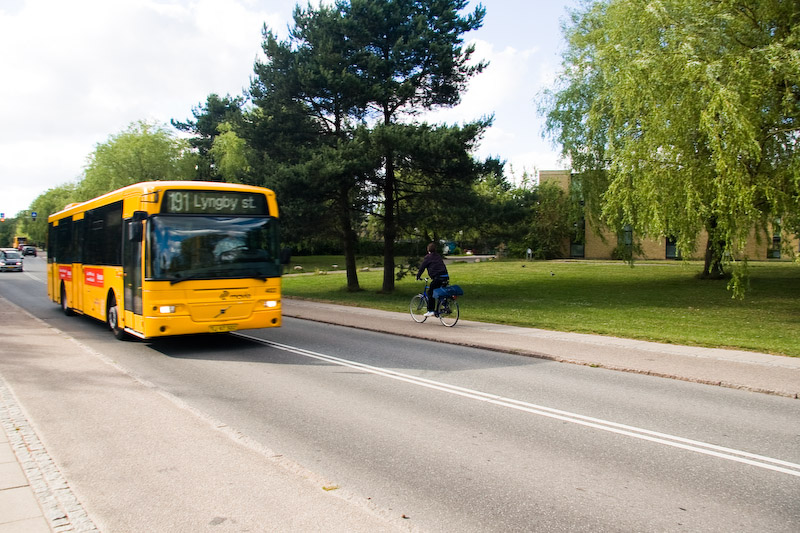

Hverdag & praktisk
De faciliteter, du bruger i den almindelige hverdag.
Nybrogård Kollegiet ligger mellem Bagsværd Sø og Lyngby Sø tæt på Mølleåen. Her bor studerende tæt på natur, fællesskab, DTU og offentlig transport.
Nybrogård Kollegiet, ofte kaldet Nybro, består af lave gule toplansbygninger fra 1970. Kollegiet er placeret i Kongens Lyngby i naturskønne omgivelser mellem Lyngby Sø, Bagsværd Sø og Mølleåen.
Kollegiet rummer både kollegieværelser og kollegielejligheder. Værelserne er fordelt på gange med fælleskøkkener, mens lejlighederne har egen indgang og eget køkken.
Siden her samler den vigtigste introduktion til kollegiet, så nye beboere, ansøgere og nysgerrige besøgende hurtigt kan forstå, hvad Nybro er — både praktisk og socialt.
Få et hurtigt overblik over kollegiets faciliteter. Nogle punkter sender dig videre til mere praktisk information, mens andre åbner en kort forklaring direkte på siden.
De faciliteter, du bruger i den almindelige hverdag.
Praktiske løsninger, når du skal flytte, fikse eller transportere ting.
Faciliteter og steder, hvor beboere kan mødes, være aktive og dyrke interesser sammen.
Nogle faciliteter kræver nøgle, vaskebrik, depositum eller kontakt til en klubansvarlig. Hvis du er i tvivl, er varmemesteren eller den relevante klub et godt sted at starte.
Her bor du i rolige omgivelser tæt på Bagsværd Sø, Lyngby Sø og Mølleåen,
men stadig med nem adgang til offentlig transport, campus og indkøb i hverdagen.

Bus 191 forbinder området med Lyngby Station, hvorfra du nemt kan komme videre med tog og bus.
Både Lyngby Station og DTU ligger i overskuelig cykelafstand, hvilket gør cyklen til en praktisk hverdagsløsning.
Der findes flere indkøbsmuligheder i området, blandt andet Netto, Rema 1000, 365discount, Føtex og Meny.
Søer og grønne områder tæt på kollegiet giver plads til gåture, løb og små pauser fra studielivet.
Rejsetider og busafgange kan ændre sig, så det er altid en god idé at tjekke den aktuelle rute, før du tager afsted.
Nybro er også fællesskab, spontane samtaler i køkkenet, klubber, arrangementer og hverdagsliv med andre studerende.
Værelserne ligger på gange med fælleskøkkener, hvor beboerne kan lave mad, hænge ud og lære hinanden at kende.
Praktisk infoFra musikrum og motionsrum til kano, cykelværksted og kreative fællesskaber — der er flere måder at være med på.
Se klubberFor nye beboere handler kollegielivet både om at finde ro i eget rum og at kunne træde ud i et større fællesskab.
Se boligtyperSe boligtyper, priser og hvordan du søger om et værelse eller en lejlighed.